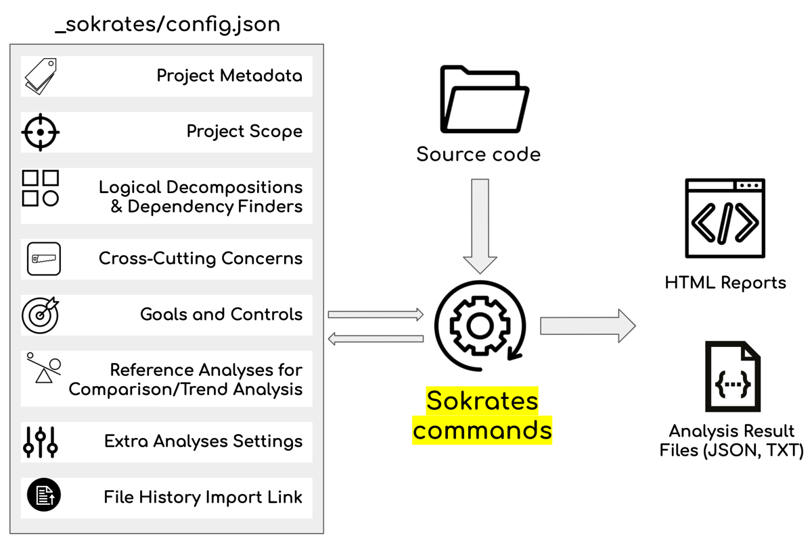
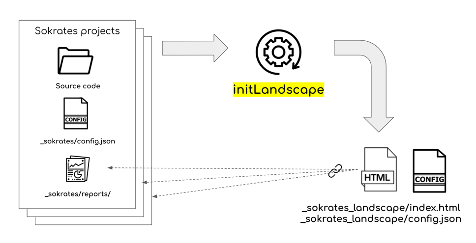
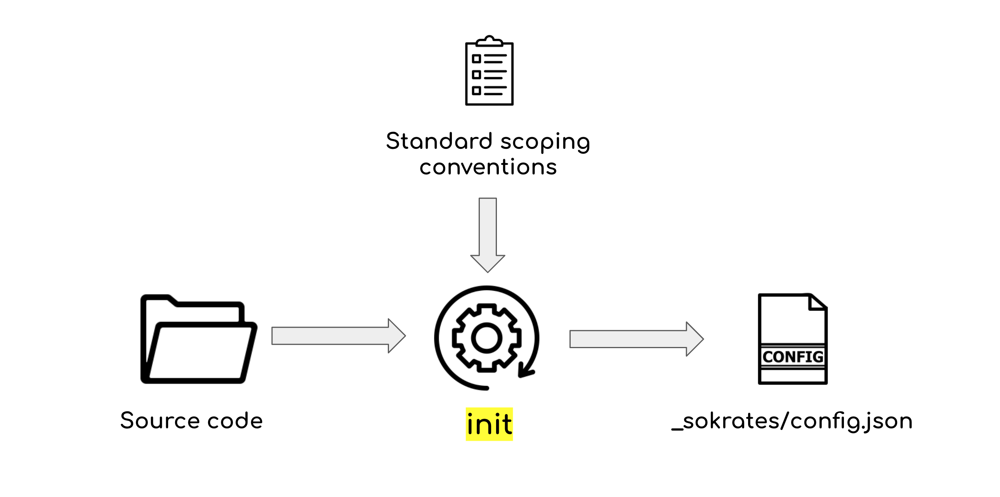

Sokrates
Polyglot source code examination tool
|
Sokrates
Polyglot source code examination tool
|
"Talk is expensive. Show me the code."
― Željko Obrenović
See a 5 minutes video on using Sokrates CLI to analyze source code of Sokrates:
See a 5 minutes video on using Sokrates Explorer to analyze source code of JUnit4:
Sokrates analyzes a code base in one step: the analyze command extracts the git history, creates an analysis configuration and generates the HTML reports. There are three ways to run it — pick the track that fits you. All three end with the same command and produce the same reports.
You need: Docker (Docker Desktop, Colima, Podman with Docker compatibility, …). The image is published for linux/amd64 and linux/arm64 (Apple Silicon), so it runs natively on macOS, Linux and Windows.
Run from the root folder of the code base you want to analyze (a git clone works best — the history feeds the contributor and trend reports):
That is all. The first run downloads the image (once); later runs start instantly. The folder is mounted at /code inside the container, and everything Sokrates writes (the _sokrates/ folder and git-history.txt) lands in your project folder.
Any other command works the same way — replace analyze:
Tip: define an alias once, and the examples further down this page work verbatim:
You need: a Java runtime, version 17 or newer (Adoptium Temurin is a good free choice; java -version shows what you have). Git itself is not needed: Sokrates reads the repository history with JGit.
Download the command line interface JAR (~20 MB, always the latest build of the master branch):
| BROWSER: | sokrates-LATEST.jar |
| CURL: |
curl https://d2bb1mtyn3kglb.cloudfront.net/builds/sokrates-LATEST.jar --output sokrates-LATEST.jar
|
Run from the root folder of the code base you want to analyze (a git clone works best — the history feeds the contributor and trend reports):
Tip: define an alias once, and the examples further down this page work verbatim:
You need: Java 17+ and Maven. The source code is on GitHub: github.com/zeljkoobrenovic/sokrates (free and open source, MIT license).
Build:
The build produces two runnable fat JARs:
Run from the root folder of the code base you want to analyze:
Tip: define an alias once, and the examples further down this page work verbatim:
You can also build the Docker image yourself: docker build -t sokrates -f dockerfile . in the repository root, then use sokrates instead of ghcr.io/zeljkoobrenovic/sokrates in the Docker track. The repository's CLAUDE.md describes the module architecture for contributors.
The analyze command chains the three steps of a Sokrates analysis. Each step is also available as a separate command, which is useful once you start refining the analysis or scripting it:
| 1. extractGitHistory | Reads the git log (with JGit, no git binary needed) and writes git-history.txt in the project root: one line per file change with date, author, commit and lines added/removed. This feeds the commit, contributor, file-age, churn and trend reports. Skipped when the folder is not a git repository (the reports about code size, duplication, structure and dependencies still work), or with -skipGitHistory. |
| 2. init | Creates the analysis configuration _sokrates/config.json using standard conventions: which files are main code, tests, generated or build files, how the code is decomposed into components, which "features of interest" to search for. Only when the file does not exist yet, so your edits survive later runs. |
| 3. generateReports | Runs all analyses and writes the HTML reports and data exports to _sokrates/reports/. Open _sokrates/reports/index.html: the reports are self-contained and open directly from disk (they load a few rendering libraries such as d3 and Mermaid from a CDN, so they need internet access). |
The workflow is iterative: run analyze, look at the reports, edit _sokrates/config.json (scope, logical decompositions, features of interest, goals and controls — see the CONFIGURATION tab), and run analyze again. The AI INSIGHTS tab shows how to let an AI coding agent refine the configuration and explain the results.
Options (all optional): -srcRoot <folder> analyzes another folder than the current one, -name/-description label the report, -conventionsFile uses custom scoping conventions for the initial configuration, -outputFolder changes where the reports go, -date sets the reference date for the "past N days" counts. Run sokrates analyze -help for the full list.
The examples use the sokrates alias defined in your track above (Docker, JAR or source build — the commands are identical).
Use exportStandardConventions to see the built-in conventions the default configuration is derived from.
Commit _sokrates/config.json to the repository to keep a tuned configuration; publish _sokrates/reports to GitHub Pages or any static host to share the reports.
Every command prints its options with -help. Without arguments, Sokrates prints this overview:
Usage: java -jar sokrates.jar <command> <options> Help: java -jar sokrates.jar <command> -help Commands: analyze, analyzeGitRepo, init, generateReports, analyzeLandscape, updateLandscape, updateLandscapePeopleConfigByUserName, updatePeopleConfigByUserName, updateConfig, addCustomTab, extractGitHistory, createConventionsFile, exportStandardConventions, extractGitSubHistory * analyze: One-shot analysis: extracts the git history (when the source root is a git repository), creates the analysis configuration if none exists (init), and generates the reports. The recommended way to get a first report: run it from the root of the code base without any options. - options: [-srcRoot <arg>] [-confFile <arg>] [-outputFolder <arg>] [-conventionsFile <arg>] [-name <arg>] [-description <arg>] [-logoLink <arg>] [-addLink <arg>] [-skipGitHistory] [-date <arg>] [-timeout <arg>] [-help] * analyzeGitRepo: Clones a git repository from its URL (JGit, no git binary needed; an existing clone is fetched and reset to the remote branch instead) and then runs analyze on it. Reports end up in <destFolder>/_sokrates/reports. For private HTTPS repositories set the SOKRATES_GIT_TOKEN (and optionally SOKRATES_GIT_USER) environment variable. - options: [-url <arg>] [-destFolder <arg>] [-branch <arg>] [-depth <arg>] [-confFile <arg>] [-outputFolder <arg>] [-conventionsFile <arg>] [-name <arg>] [-description <arg>] [-logoLink <arg>] [-addLink <arg>] [-date <arg>] [-timeout <arg>] [-help] * init: Creates a new Sokrates analysis configuration file based on standard and optional custom conventions - options: [-srcRoot <arg>] [-confFile <arg>] [-conventionsFile <arg>] [-name <arg>] [-description <arg>] [-logoLink <arg>] [-addLink <arg>] [-timeout <arg>] [-help] * generateReports: Generates Sokrates reports based on the analysis configuration - options: [-confFile <arg>] [-outputFolder <arg>] [-timeout <arg>] [-date <arg>] [-help] * analyzeLandscape: Creates or updates a Sokrates landscape report aggregating the repository analyses found under the analysis root (the landscape counterpart of analyze). Same behavior and options as updateLandscape, which is kept as the older name. - options: [-analysisRoot <arg>] [-confFile <arg>] [-recursive] [-setName <arg>] [-setDescription <arg>] [-setLogoLink <arg>] [-addLink <arg>] [-timeout <arg>] [-date <arg>] [-help] * updateLandscape: Updates or creates a Sokrates landscape report, aggregating results of multiple analyses - options: [-analysisRoot <arg>] [-confFile <arg>] [-recursive] [-setName <arg>] [-setDescription <arg>] [-setLogoLink <arg>] [-addLink <arg>] [-timeout <arg>] [-date <arg>] [-help] * updateLandscapePeopleConfigByUserName: Updates (or creates) the landscape config-people.json by grouping all contributor emails sharing the same display name (userName) under one entry, joining the emails in the email field with ';'. Purely additive: appends only new emails to existing entries, never removes emails or entries. - options: [-analysisRoot <arg>] [-confFile <arg>] [-timeout <arg>] [-help] * updatePeopleConfigByUserName: Single-repository version of updateLandscapePeopleConfigByUserName: updates (or creates) _sokrates/config-people.json by grouping all contributor emails sharing the same display name (userName) under one entry. Reads only the repository's git-history.txt, so run it after extractGitHistory (no generateReports needed). Same config file and people-config format as landscapes. Purely additive. - options: [-confFile <arg>] [-timeout <arg>] [-help] * updateConfig: Updates an analysis configuration file and completes missing fields - options: [-confFile <arg>] [-skipComplexAnalyses] [-setCacheFiles <arg>] [-setName <arg>] [-setDescription <arg>] [-setLogoLink <arg>] [-addLink <arg>] [-timeout <arg>] [-help] * addCustomTab: Adds a custom iframe tab to the repository report configuration (config.json customTabs). If a custom tab with the same label already exists, it is overwritten instead of added. - options: [-confFile <arg>] [-label <arg>] [-iframeLink <arg>] [-help] * extractGitHistory: Extract a git history in a format used by Sokrates and saves it in the git-history.txt file - options: [-analysisRoot <arg>] [-help] * createConventionsFile: Create a new analysis conventions file and saves it in <current-folder>/analysis_conventions.json * exportStandardConventions: Export standard Sokrates analysis convention to <current-folder>/standard_analysis_conventions.json. * extractGitSubHistory: A utility function to split a git history file (git-history.txt) into smaller ones based on a commit file path prefix, removing the prefix from file path in split files - options: [-prefix <arg>] [-analysisRoot <arg>] [-help]
The full reference of every key in config.json and the landscape configuration is in docs/configuration.md.
A single Sokrates analysis describes one repository. A landscape aggregates many repository analyses into one portfolio report: the size and languages of every repository, who contributes where and how much, how contributors and teams connect across repositories, and how all of that changes over time. It is the tool for looking at a whole organization, a business unit, or an open-source ecosystem rather than one code base.
More live landscapes are on the EXAMPLES tab.
The commands use the sokrates alias from the INSTALL & USE tab (Docker, JAR or source build — the commands are identical).
analyzeLandscape (the landscape counterpart of analyze; updateLandscape is the older name of the same command and still works) creates _sokrates_landscape/config.json on the first run and keeps your edits on later runs; the discovered repositories are kept apart in info.json, so re-running after adding or re-analyzing repositories is always safe. Use -setName, -setDescription, -setLogoLink and -addLink to label the landscape, or edit the metadata in the configuration file.
A landscape is driven by JSON files in _sokrates_landscape/. All keys are documented in docs/configuration.md; the most useful ones:
| config.json | Metadata (name, description, logo, links), display thresholds, contributor and bot filters, the repositoryReportsUrlPrefix that links the landscape to the repository reports, and the virtualLandscapes definitions described below. |
| config-tags.json | Repository tags: groups of regex rules that label repositories (by name, path or the technologies they contain) and drive the tag-based overviews. |
| config-teams.json | Teams: email patterns that assign contributors to teams, enabling the team-level reports and team topology graphs. |
| config-people.json | People: merges the several emails one person commits with into a single identity. Bootstrap it with sokrates updateLandscapePeopleConfigByUserName, which groups all emails that share a display name (additive; it never removes entries), then run analyzeLandscape again. |
Large landscapes are easier to read when split. There are two ways, and they can be combined:
The landscape and the repository reports are static HTML. Copy the whole root folder (repository folders plus _sokrates_landscape/) to any static host — S3 + CloudFront, GitHub Pages, an internal web server — and the links between the landscape and the repository reports keep working. The reports load a few rendering libraries (d3, Mermaid) from a CDN, so viewers need internet access; nothing is sent anywhere.
Sokrates measures: size, complexity, duplication, churn, coupling, contributors. The sokrates-skills project adds the layer only an AI reader can add — what the code is, what it depends on, where the real risks are, how it got here — and makes Sokrates itself more useful by configuring it well. The skills work with Claude Code and similar AI coding tools that can load SKILL.md instructions.
Read a finished Sokrates analysis (_sokrates/) and write findings with verifiable evidence. Each scanner answers one question:
Create and tune Sokrates configuration before an analysis. Each comes with a checker that simulates Sokrates' own rules on the real tree, so a configuration is verified before Sokrates runs:
The field references were read from the Sokrates Java source — including the places where documentation and code disagree.
Every skill is a folder with a SKILL.md in the open Agent Skills format, so the same folders work in any AI coding tool that supports skills. The repository's install.sh symlinks all of them into the right places; git pull then updates every tool at once.
git clone https://github.com/zeljkoobrenovic/sokrates-skills.git cd sokrates-skills ./install.sh # → ~/.claude/skills (Claude Code) and ~/.agents/skills (Codex, Gemini CLI, Cursor, Copilot, …) ./install.sh --project # → ./.claude/skills and ./.agents/skills of the current project instead (shareable via git)
| Tool | Reads skills from | Invoke |
|---|---|---|
| Claude Code | ~/.claude/skills/ (personal), .claude/skills/ (project) | automatically when relevant, or /tech-stack-scan |
| OpenAI Codex CLI | ~/.agents/skills/ (personal), .agents/skills/ (repository) | automatically, or $tech-stack-scan |
| Gemini CLI | ~/.gemini/skills/ or ~/.agents/skills/ (user), .gemini/skills/ or .agents/skills/ (workspace); or gemini skills install https://github.com/zeljkoobrenovic/sokrates-skills.git | activates a matching skill after a confirmation; gemini skills list --all |
| Cursor | ~/.cursor/skills/ or ~/.agents/skills/ (user), .cursor/skills/ or .agents/skills/ (project); .claude/skills/ is read too | / in Agent chat, or automatically |
| GitHub Copilot (CLI, VS Code, coding agent) | ~/.copilot/skills/ or ~/.agents/skills/ (personal), .github/skills/, .agents/skills/ or .claude/skills/ (repository) | automatically; gh skill installs from repositories |
| Other tools | any Agent-Skills folder: ./install.sh <folder>, or copy the skill folders | see the tool's documentation |
Requirements: Python 3.9+ (standard library only) for the scripts, and a Sokrates analysis of your project.
cd <your-project> java -jar sokrates.jar analyze # = extractGitHistory + init + generateReports # or, without Java: docker run --rm -v "$(pwd):/code" ghcr.io/zeljkoobrenovic/sokrates analyze
See the INSTALL & USE tab for the Docker, JAR and from-source ways of running Sokrates.
The default init configuration is a starting point. In the project folder, ask your AI tool to improve it — each configuration skill previews the effect on the real tree before Sokrates runs:
Then regenerate the reports so the analysis reflects the refined configuration:
java -jar sokrates.jar generateReports
In the project folder, ask your AI tool: "run a tech stack scan", "explain the risks in this codebase", "what does this software do?", "how did this codebase evolve?", or "run a full scan" for all fifteen scanners. Every scanner reads the Sokrates data first and spends its reading budget where the numbers point.
Results land in <your-project>/_sokrates/reports/ai-insights/: one JSON file per scanner and index.html — a self-contained interactive page with an overview, a page per scanner, a cross-scanner list of attention items, severity and confidence filters, full-text search, and every finding's evidence as file, line range and verbatim snippet.
export GEMINI_API_KEY=... python3 skills/illustrators/generate_summary_visuals.py <your-project>/_sokrates/reports/ai-insights
The illustrator script (in the skills/illustrators/ folder of the repository) turns each scanner's summary into one calm, mostly visual illustration that tells its story with a few key words — a pipeline for CI/CD, a landscape with glowing hotspots for risks, growth rings for evolution. It uses Google's Gemini image model ("Nano Banana"), saves the images next to the findings (ai-insights/visuals/), records them in the findings JSON and re-renders the explorer, which shows each image at the end of the foldable summary block. Existing images are kept on re-runs; --force regenerates them. Skip this step and the explorer looks exactly as before.
cd <your-project> java -jar sokrates.jar addCustomTab -label "AI Insights*" -iframeLink "../ai-insights/index.html"
This registers an AI Insights* tab in the configuration of the main Sokrates HTML report (_sokrates/reports/html/index.html) that shows the explorer inline, so the quantitative reports and the AI findings live in one place.
java -jar sokrates.jar generateReports
The tab is part of the generated report from now on; it picks up the explorer's regenerated index.html automatically whenever you re-run the scanners.
All scanners share one contract (sokrates-scan-core): the findings format, the evidence rules, the validator and the explorer renderer. A new scanner is a SKILL.md that defines its question and its group taxonomy; the proven way to build one is to run it live on a real codebase with a fresh agent, ask that agent what was unclear, and fold the answers back into the skill. See the development notes.


java -jar <sokrates-folder>/sokrates-LATEST.jar createConventionsFile # edit the 'analysis_conventions.json' file to define your custom conventions java -jar <sokrates-folder>/sokrates-LATEST.jar init -conventionsFile analysis_conventions.json
java -jar <sokrates-folder>/sokrates-LATEST.jar exportStandardConventions

NOTE: Analysis is limited to repositories with commits in past year or two.
Logical decomposition is a representation of the organization of the main source code, where every and each file is put in exactly one logical component.